海みなと蒲郡 第3回 海辺のクリスマスフェスタ
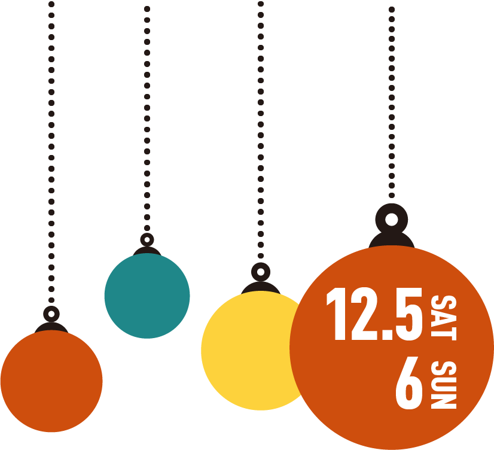
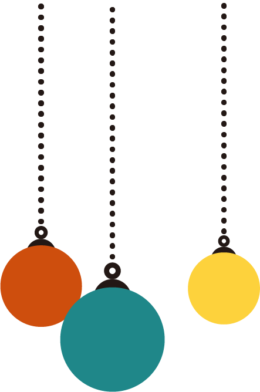
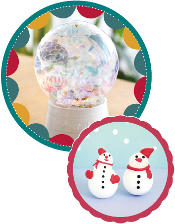
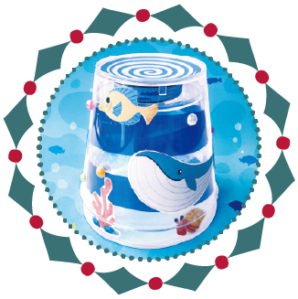
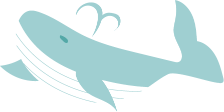
つくって、あそんで、
海のクリスマス♪
海のなかまの工作や、
おさかな釣りでわくわくいっぱい！
つくる楽しさに出会える、海辺のクリスマスへようこそ。
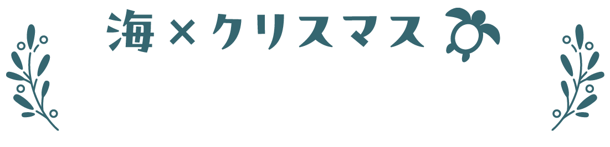
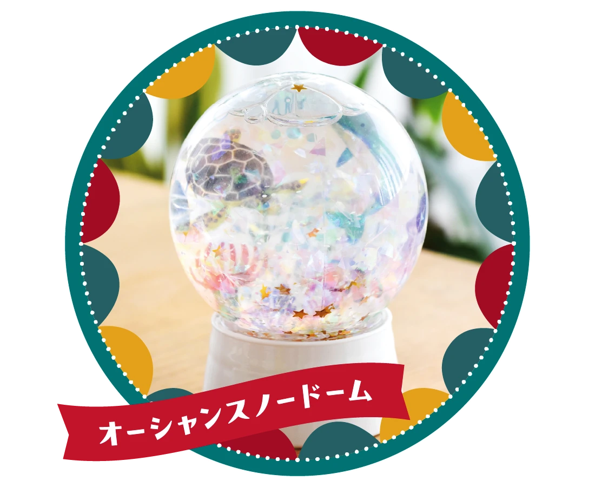
海の生き物シールを自由にレイアウトして、オリジナルのスノードームを彩ろう！
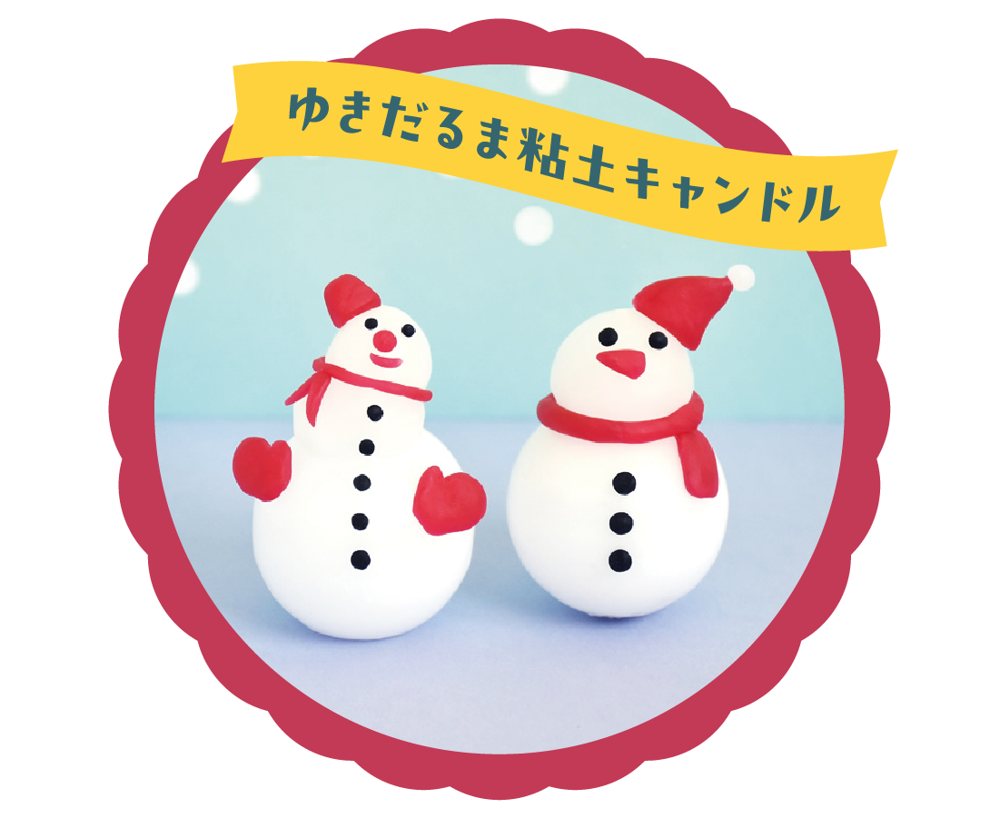
粘土のように自由に形を整えて自分だけのゆきだるま作りを楽しもう！
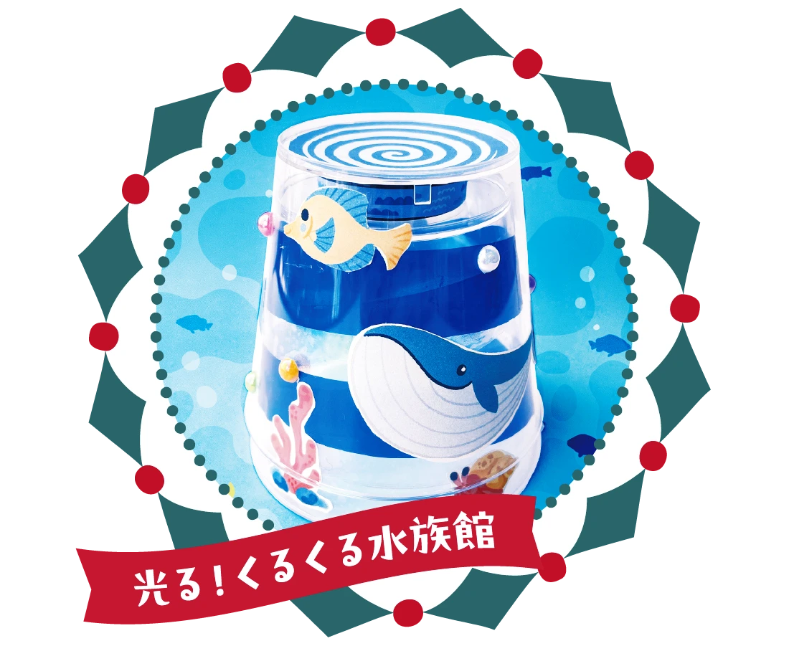
セロファンやオーロラシート、海の生き物シールを好きなように貼って、水族館を作ろう。ライトをつけると幻想的な雰囲気に☆
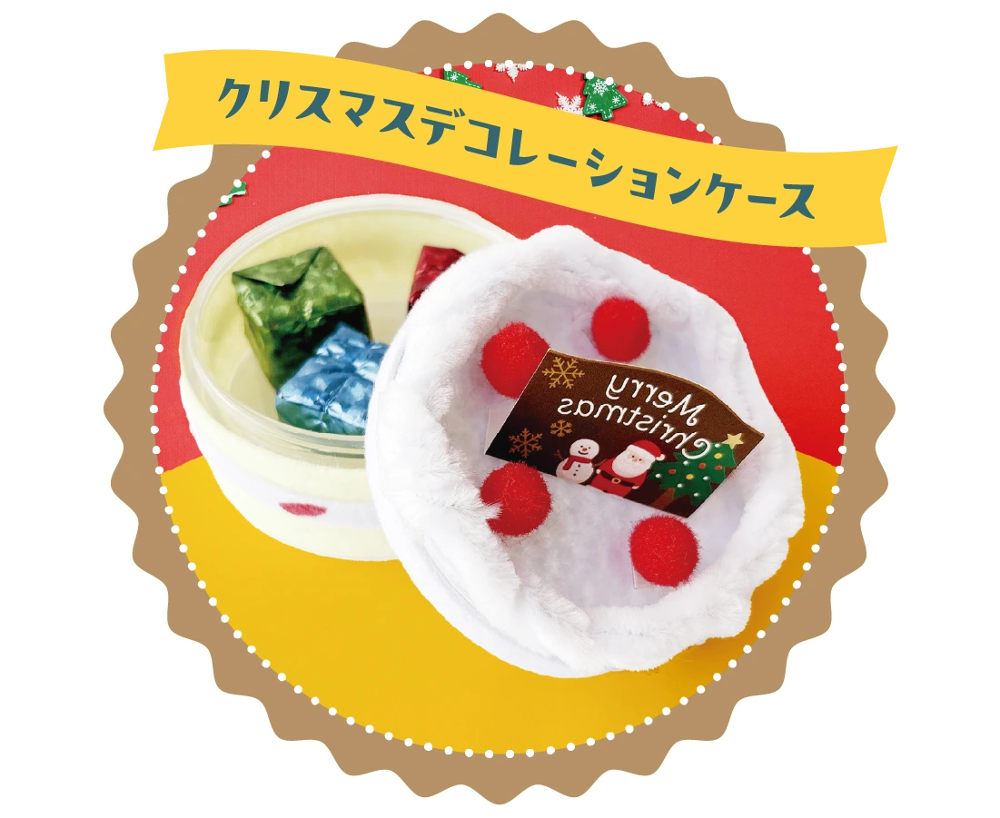
ミニケースをフェルトで包み込み、手のひらサイズのデコレーションケーキを完成させよう！
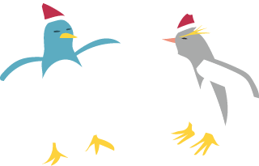
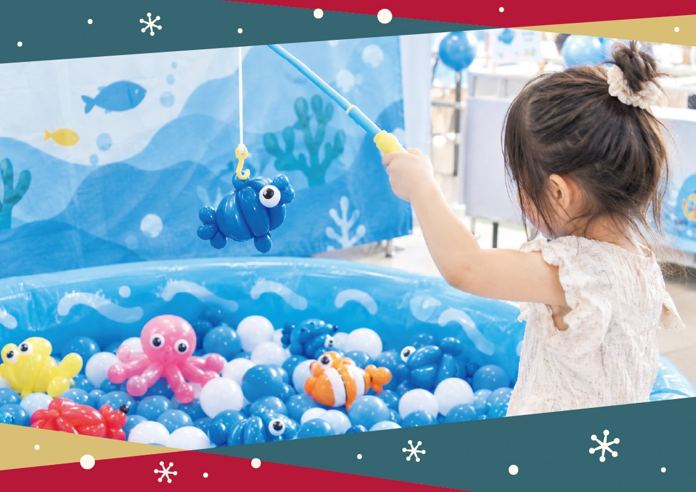
海の生きものバルーンアート釣りに挑戦！釣ったおさかなにウロコや目を描き入れて完成させよう！
ご参加のご案内
- 時間
- 10:00〜17:00
- 対象
- 中学生以下のお子様（お1人様1つ限り）
- 料金
- 無料
●混雑が予想されるため、各日10時より整理券を配布いたします。
●おさかな市場内専用入口より順番にご案内いたします。
※その他の出入口にてお待ちの方は専用列の最後尾にお並びいただく場合がございます。あらかじめご了承ください。
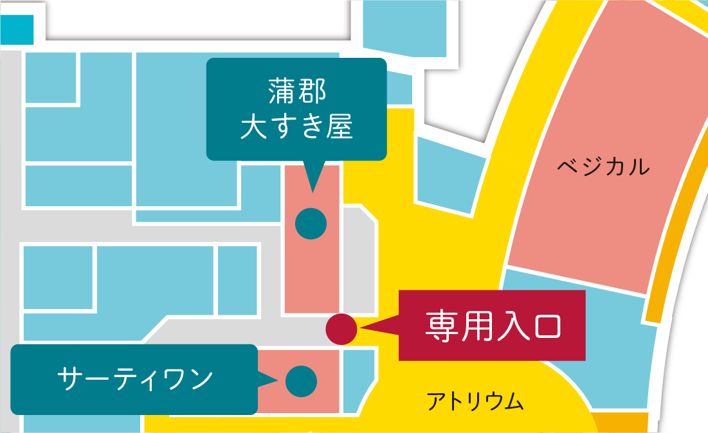
主催：一般社団法人海みなと蒲郡